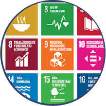
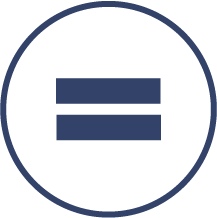

¿Qué hacemos?
Somos una organización sin fines de lucro que tiene como finalidad el poder brindar educación mediante intervenciones en todos los niveles socio-económicos haciendo foco en ayudar a los grupos donde el impacto pueda ser mayor.

¿Por qué es importante la educación?
La educación es la clave para poder alcanzar otros muchos Objetivos de Desarrollo Sostenible (ODS). Cuando las personas pueden acceder a una educación de calidad, pueden escapar del ciclo de la pobreza.

¿Pueden las personas, mediante la educación, conseguir mejores empleos y disfrutar de una vida mejor?
Sí, la educación reduce la desigualdad. Por consiguiente, la educación contribuye a reducir las desigualdades y a lograr la igualdad de género.